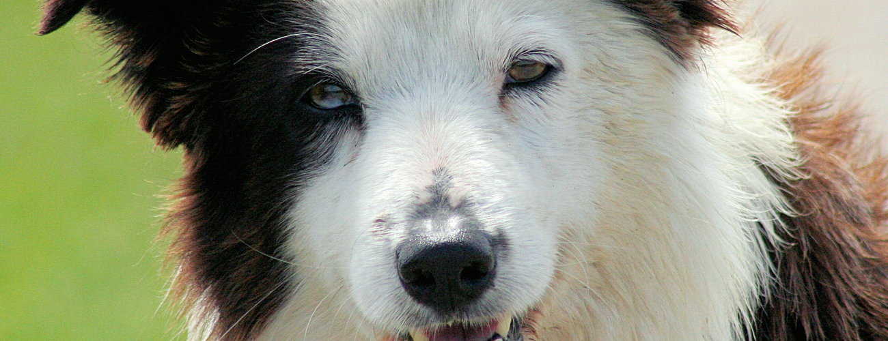
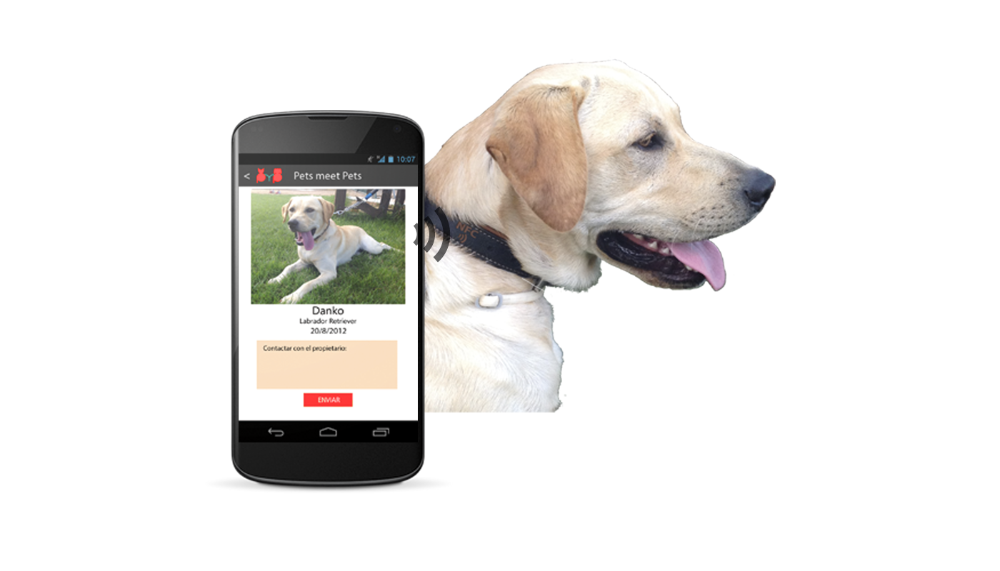
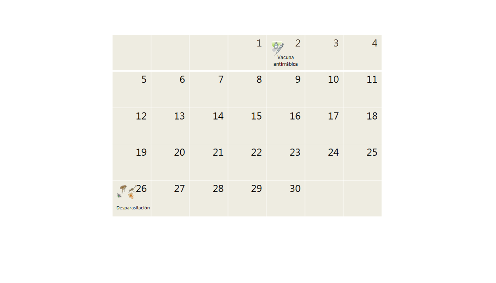
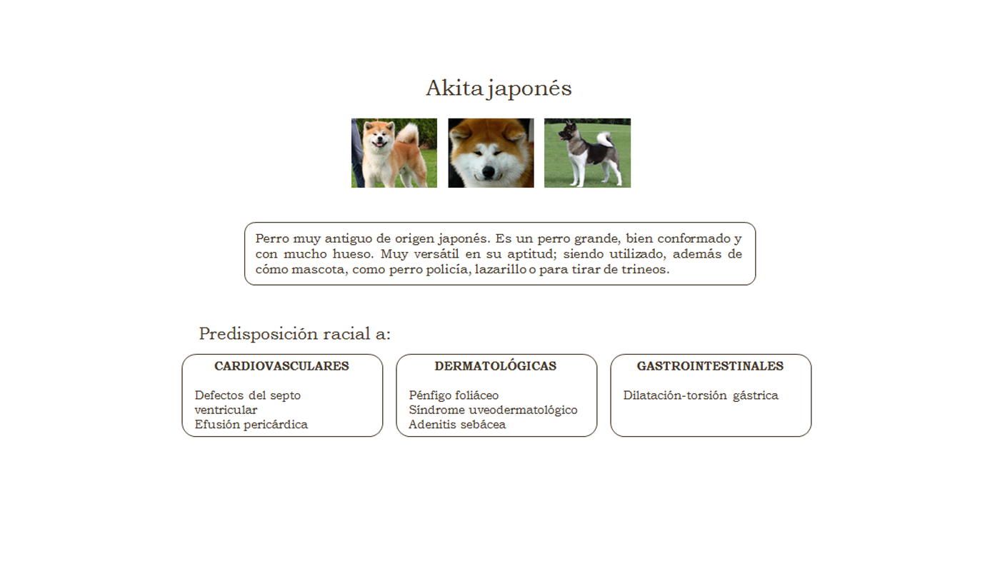
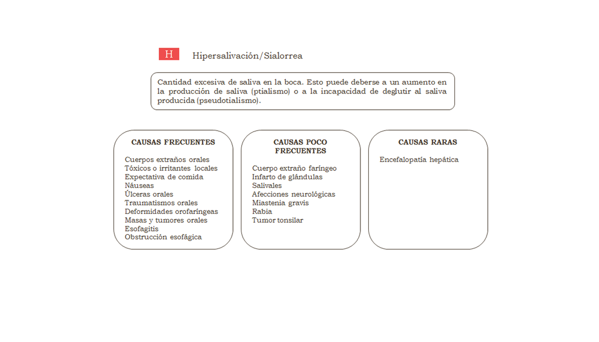

Bienvenidos a Pets meet Pets
Pets meet Pets es una red social para propietarios de mascotas que ofrece los servicios básicos de una red social: perfiles públicos y privados, grupos, publicación de estados, mensajería, etc. Al ser una red social dedicada a las mascotas, ofrecerá otra serie de servicios relacionados con los animales de compañía como: agenda profiláctica, herramienta de diagnóstico y predisposición racial a enfermedades.
Además, Pets meet Pets dispone de un collar con tecnología NFC que, funcionando conjuntamente con nuestra red social, permite recuperar animales perdidos.
Todo esto, gracias al "crowdfunding", pronto estára disponible para la red de amigos de Pets meet Pets!
Amigos
En Pets meet Pets podrás generar un perfil de usuario para ti y para tu mascota. También podrás invitar y agregar amigos para compartir con ellos aquello de desees.
PROXIMAMENTE

By Flickr: Kjunstorm, zubillaga61
Mensajes
Pets meet Pets también dispondrá de un servicio de chat para que puedas comunicarte en cualquier momento con tus amigos en la red social.
PROXIMAMENTE
Fotos
En la sección fotos de Pets meet Pets podrás gestionar todas tus fotografías.
PROXIMAMENTE

En construcción

En construcción

En construcción

En construcción

En construcción

En construcción
Tienda
En nuestra tienda podrás adquirir nuestro collar NFC y el resto de artículos de Pets meet Pets.
PROXIMAMENTE
Blog PmP
En Pets meet Pets tendrás también tu revista sobre el mundo de las mascotas. Aquí podrás encontrar noticias de actualidad, artículos veterinarios, información sobre eventos, recomendaciones, consejos y todo lo relacionado con el mundo de las mascotas.
PROXIMAMENTE
Agenda profiláctica
Con esta herramienta podrás controlar todos los tratamientos preventivos de tu mascota para mantener su salud y prevenir enfermedades.
Pets meet Pets te avisará cuando tu mascota necesite un nuevo tratamiento.
PROXIMAMENTE
Predisposicón racial
Todos los animales por el hecho de pertenecer a una raza pueden estar condicionados o predispuestos a sufir determinadas patologías. Con esta herramientas podrás identificar a qué enfermedades es más susceptible tu mascota y podrás tratar de prevenirlas o diagnosticarlas precozmente.
PROXIMAMENTE
Diagnóstico
Con esta herramienta podrás identificar cualquier manifestación de enfermedad que muestre tu mascota y podrás averiguar qué puede provocarla.
PROXIMAMENTE
Collar NFC
En construcción
PROXIMAMENTE